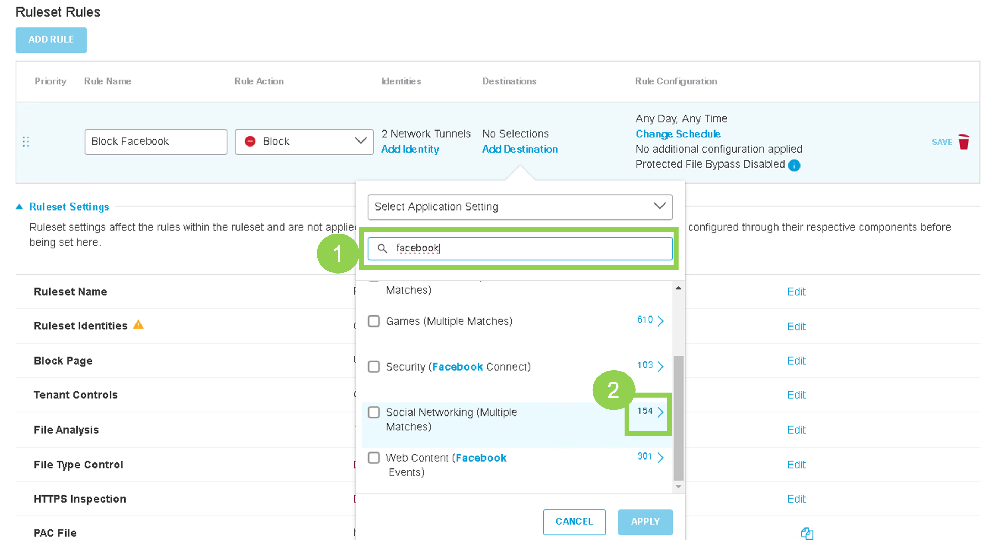
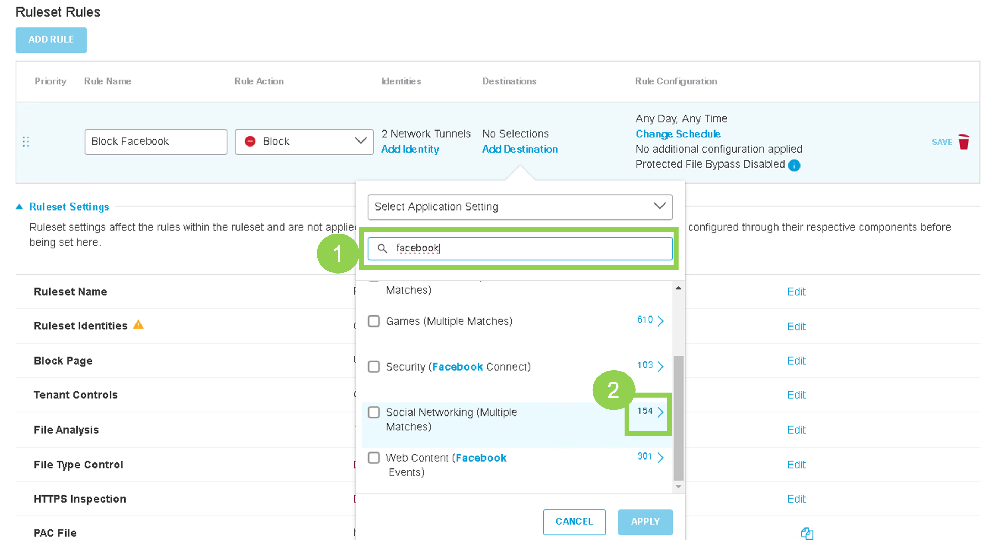
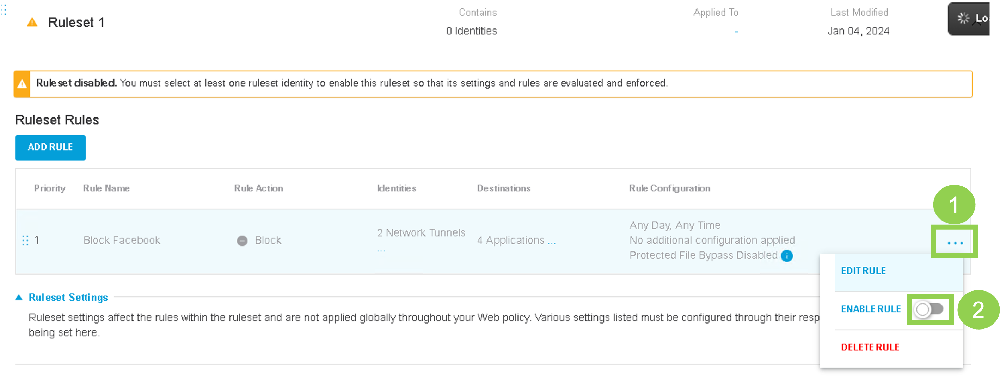
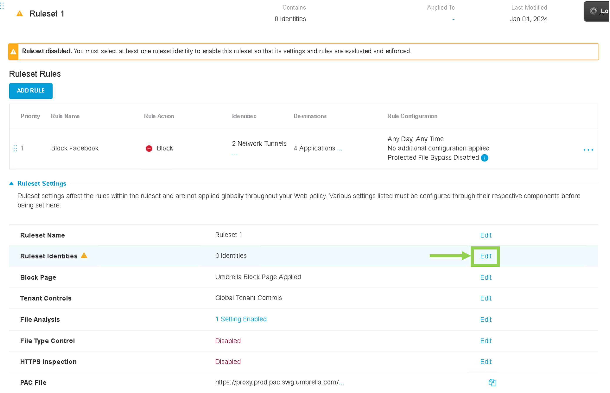
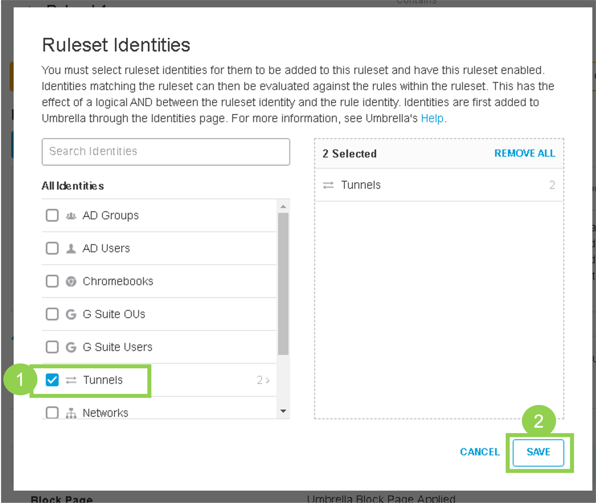

Task 6: Umbrella Policy for Site300
The goal of this Task is to create Umbrella Policies that will:
- Use Firewall Policy (Cloud Delivered Firewall / CDFW) on Umbrella to block any icmp traffic to Google IP address of 8.8.8.8
- Use Web Policy (Secure Web Gateway / SWG) on Umbrella to block web traffic to social media websites.
Step 1 - Firewall Policy
- Configure an Umbrella Firewall Policy.
- On Umbrella dashboard, go to Policies > Management > Firewall Policy. At the top-right corner, click Add

- Create a Rule Name of
Block ICMP Google. - Under Rule Action select
Blockfrom drop-down menu
- Under Rule Criteria > Protocol select
ICMPas the protocol - Further under Destinations (under Rule Criteria) select
Specify IPfrom drop-down menu:- Enter CIDR IP Address:
8.8.8.8
- Enter CIDR IP Address:
- On Umbrella dashboard, go to Policies > Management > Firewall Policy. At the top-right corner, click Add
- Scroll down on the page and Enable logging and then Save the policy

Step 2 - Web Policy
-
Configure an Umbrella Web Policy to block social media websites.
- Go to Policies > Management > Web Policy and click Add on the top right as shown in below screenshot:

- Click ADD RULE under 'Ruleset Rules'.
- Give the Rule Name of
Block Facebookand then click Add Identity
- Select Inherit Ruleset Identities, then Apply

- Click Add Destination

- Click on Application Settings, then search for facebook in
Search Applicationsbar. Scroll down and Click on the right side (on the 154 number) of Social Networking (Multiple Matches). Next, select Facebook and Facebook Messenger and hit Apply 


- Click Save

- Click three dots and then Enable Rule 
- Confirm by clicking Update

- Go to Policies > Management > Web Policy and click Add on the top right as shown in below screenshot:
-
Under Ruleset Settings, go to the Ruleset Identities section and click Edit 
-
Select Tunnels and click Save 
-
Go to the HTTPS Inspection section and click Edit

-
Select Enable HTTPS Inspection, then Save

-
Scroll down and click Close
Step 3 - Verify Policies
-
Test if traffic is being redirected to Umbrella.
- Launch console access to ubuntu Site300 VPN10 host by using mRemoteNG application.
- Use Chromium to navigate to
welcome.umbrella.com. A green check mark should appear, confirming that traffic from VPN 10 is being successfully redirected to Umbrella.
-
Verify Firewall policy enforcement on Umbrella by launching the Terminal application on Site300 VPN10 host. As per our policy ICMP traffic to 8.8.8.8 should not be allowed.
- From the Ubuntu Host on VPN 10, use Terminal issue
ping 8.8.8.8command. This ping should fail - as expected.
- From the Ubuntu Host on VPN 10, use Terminal issue
-
Verify Web Policy by using Chromium Web Browser on Site300 VPN10 host.
- Use Chromium to navigate onto traditional websites, such as
www.cisco.com. Access to this website should work. - Use Chromium to navigate onto
www.facebook.com. As per our Umbrella Web Policy, this site should be blocked and, as expected, Cisco Umbrella block page will appear.
- Use Chromium to navigate onto traditional websites, such as